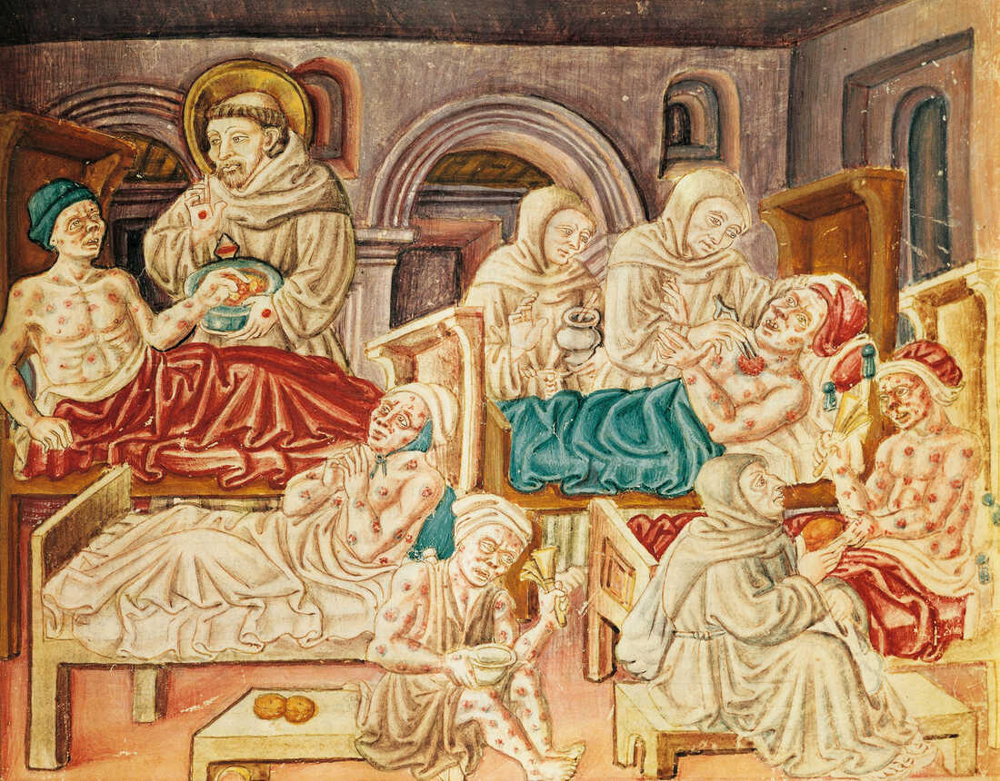

The Great Plague of London in 1665 was the last in a long series of plague epidemics that first began in London in June 1499. The Great Plague killed between 75,000 and 100,000 of London’s rapidly expanding population of about 460,000.First suspected in late 1664, London’s plague began to spread in earnest eastwards in April 1665 from the destitute suburb of St. Giles through rat-infested alleys to the crowded and squalid parishes of Whitechapel and Stepney on its way to the walled City of London.First suspected in late 1664, London’s plague began to spread in earnest eastwards in April 1665 from the destitute suburb of St.Giles through rat-infested alleys to the crowded and squalid parishes of Whitechapel and Stepney on its way to the walled City of London.


There are three types of plague. Most of the sick in 1665-1666 had bubonic plague. This created swellings (buboes) in the lymph nodes found in the armpits, groin and neck. Plague sufferers experienced headaches, vomiting and fever. They had a 30% chance of dying within two weeks. This type of plague spread from a bite caused by a black rat flea that carried the Yersinia pestis bacteria.Worse still was pneumonic plague, which attacked the lungs and spread to other people through coughing and sneezing, and septicaemic plague, which occurred when the bacteria entered the blood. In these cases, there was little hope of survival. Treatments and prevention at the time did not help. Sometimes, patients were bled with leeches. People thought impure air caused the disease and could be cleansed by smoke and heat. Children were encouraged to smoke to ward off bad air. Sniffing a sponge soaked in vinegar was also an option.
Charlatans who stayed in London set themselves up as doctors. They sold plague ‘cures’ at high prices. There were many who were willing to try these quack cures as few had any other alternative. ‘Plague water’ was a popular cure as was powered unicorn horn and frogs legs. What actually went into powered unicorn horn is not known. Putting the tail feathers of a live chicken onto buboes drew out the poison allowing the patient to recover – so people were told. Making a victim of the plague sweat and then applying to buboes a recently killed pigeon was a popular ‘cure’.
Next Page Previous Page